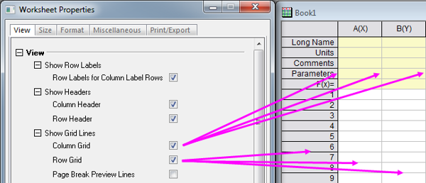
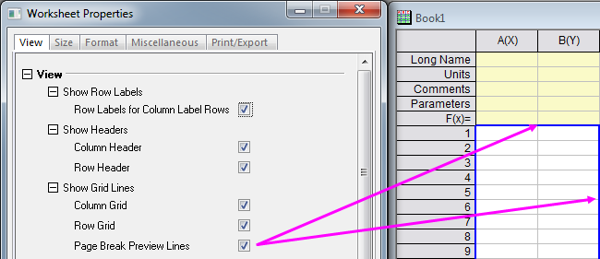
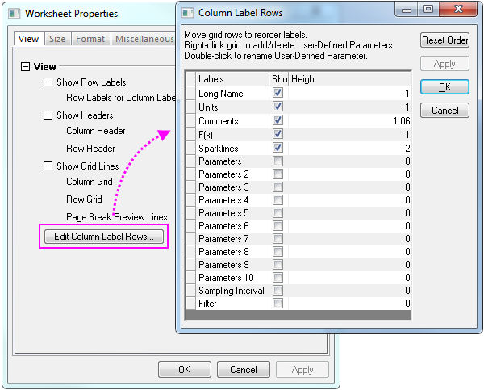
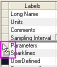

| Gitternetzlinien zeigen |

Das Kontrollkästchen Seitenumbruch in Vorschau blendet eine durchgezogene blaue Linie ein, um den Druckbereich zu kennzeichnen, und eine gestrichelte blaue Linie, um die vertikalen und horizontalen Seitenumbrüche anzuzeigen. Dies entspricht der Anzeige der Druckvorschau, nur ohne Wiederholung der Informationen der Kopfzeile.

|
| Spaltenbeschriftungszeilen bearbeiten... |
Zusätzlich können Sie das Erscheinungsbild der Spaltenbeschriftungszeilen anpassen, indem Sie auf die Schaltfläche Spaltenbeschriftungszeilen bearbeiten klicken, um den Dialog Spaltenbeschriftungszeilen zu öffnen.  Im Dialog Spaltenbeschriftungszeilen können Spaltenbeschriftungszeilen hinzugefügt, gelöscht und neu geordnet werden. Sie können ebenfalls die Anzeige der Spaltenbeschriftungszeilen steuern und ihre Höhen angeben.
- Um eine benutzerdefinierte Spaltenbeschriftungszeile einzufügen, klicken Sie bitte mit der rechten Maustaste in die Liste und wählen Sie im Kontextmenü Benutzerdefinierte Parameter hinzufügen aus. Scrollen Sie bis zum Listenende und geben Sie den Namen Ihrer Spaltenbeschriftungszeile ein (standardmäßig ist er "UserDefinedn").
- Um eine Spaltenbeschriftungszeile zu löschen, müssen Sie nur mit der rechten Maustaste darauf klicken und im Kontextmenü Löschen auswählen. Es ist nicht möglich, eine standardmäßige Spaltenbeschriftungszeile zu löschen - nur benutzerdefinierte Spaltenbeschriftungszeilen.
- Um die Spaltenbeschriftungszeilen neu anzuordnen, ziehen Sie bitte die Gitternetzzellen auf die linke Seite der Beschriftungsspalten, um die Beschriftungsordnung in den Kopfzeilen des Arbeitsblatts neu zu ordnen.
- 
- Verwenden Sie das Kontrollkästchen Zeigen (für Anzeigen aktivieren, für Ausblenden deaktivieren), um die Anzeige einer Spaltenbeschriftungszeile zu steuern.
- Klicken Sie in die Spalte Höhe, um die Höhe der Spaltenbeschriftungszeile zu bearbeiten. Die Höhe ist relativ zur Texthöhe.
|